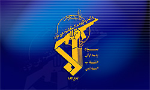

|
|

سپاه برای تحول در علوم انسانی دست به کار می شود
چهار شنبه13 بهمن 1389
تحول سبز: سرتیپ حسین ظریفمنش، فرمانده دانشگاه جامع امام حسین، متعلق میگوید که زمینههای تحول در علوم انسانی در دانشگاه امام حسین وجود دارد.
به گزارش فارس خبرگزاری سپاه ، ظریفمنش امروز ۹ بهمن، در مراسم افتتاحیه نخستین همایش “تحول در علوم انسانی با رویکرد اسلامی” اظهار داشت: دانشگاه امام حسین “کاری جدی” را برای ایجاد تحول در علوم انسانی آغاز کرده است.
فرمانده دانشگاه امام حسین با تاکید بر “آسیبپذیری جدی انقلاب در مقابل موضوعی به نام علوم انسانی”، گفت: “اگر ما میخواهیم این انقلاب همچنان با صلابت و دشمن شکن پیش برود باید در این علوم تحول ایجاد کنیم.”
در این همایش، محی الدین حائری شیرازی، عضو مجلس خبرگان رهبری نیز گفت: “غرب توانسته با انحصاری کردن علم، افکار خود را به جهان تحمیل کند”.
او افزود: “اگر اسلام کرسی علوم انسانی دانشگاهها را فتح نکند، همه پیروزیهای ما پا در هوا است.”
حمیدرضا آیت اللهی، رئیس “پژوهشگاه علوم انسانی و مطالعات فرهنگی” ایران نیز با اعلام شروع به کار بازنگری در سرفصلهای ۳۸ رشته دوره کارشناسی، از “تمرکز جدی بخشهای مسئول” در بازنگری سرفصلهای علوم انسانی خبر داده است.